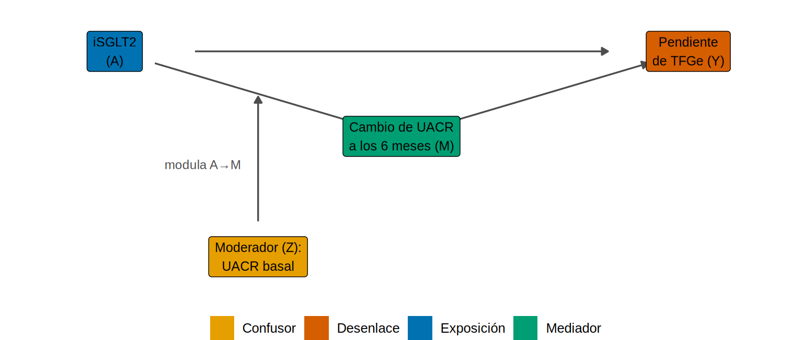
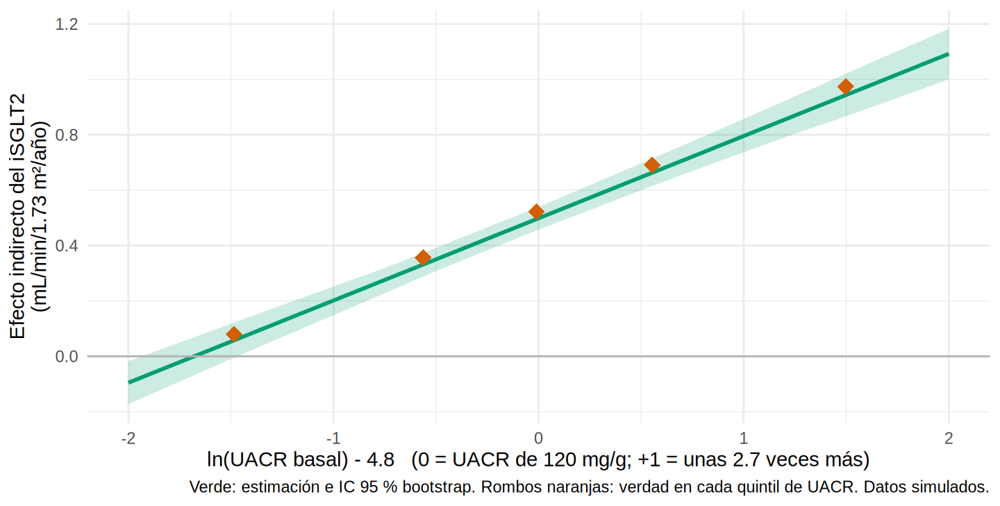

Mediación moderada: ¿el camino indirecto es igual para todos?
Nota🩺 Escenario
Los pacientes con UACR muy alta suelen bajarla mucho más con el iSGLT2 que los que ya tienen una UACR casi normal (no hay mucho que bajar). Entonces, “el efecto del fármaco a través de la albuminuria”, ¿es el mismo en un paciente A1 que en uno A3? Si cambia según el paciente, tienes mediación moderada: la mediación (18.1) y la modificación del efecto (8.4) en la misma pregunta.
En 18.4 vimos una interacción entre el fármaco y el mediador dentro del modelo del desenlace. Aquí hablamos de otra cosa: una tercera variable (el moderador, \(Z\)) que cambia la fuerza de uno de los eslabones de la cadena. Es el esquema clásico de la “mediación moderada” (moderated mediation, modelos de Hayes), traducido a nefrología.
Lo que vamos a hacer
Entender qué es un efecto indirecto condicional y el índice de mediación moderada.
Estimarlos con dos regresiones y bootstrap, y compararlos con la verdad.
Repetir el análisis con lavaan (que sí se ejecuta aquí) y con mediation (condicional).
Paso 1. La idea con una figura y dos ecuaciones
El moderador puede actuar sobre el eslabón \(A \to M\) (el fármaco baja más la UACR en algunos), sobre \(M \to Y\) (bajar la UACR rinde más en algunos) o sobre el camino directo. En nuestro ejemplo, \(Z\) = ln(UACR) basal modifica el eslabón \(A \to M\):
library(tidyverse)library(boot)source("R/funciones_epi.R")source("R/funciones_extra_cap18.R")source("R/simular_mediacion.R")nodos <-tribble(~nombre, ~x, ~y, ~etiqueta, ~rol,"A", 1, 1, "iSGLT2\n(A)", "exposicion","M", 2, 0.4, "Cambio de UACR\na los 6 meses (M)", "mediador","Y", 3, 1, "Pendiente\nde TFGe (Y)", "desenlace","Z", 1.5, -0.45, "Moderador (Z):\nUACR basal", "confusor")aristas <-tribble(~de, ~a, "A", "M", "M", "Y", "A", "Y")dibujar_dag(nodos, aristas, tam_texto =3.3, expandir =c(0.2, 0.25)) + ggplot2::annotate("segment", x =1.5, xend =1.5, y =-0.2, yend =0.68, color ="grey30",linewidth =0.6, arrow = grid::arrow(length = grid::unit(0.18, "cm"), type ="closed")) + ggplot2::annotate("text", x =1.44, y =0.2, label ="modula A→M", hjust =1, size =3.2, color ="grey30")

La flecha de \(Z\) apunta a otra flecha (A → M): así se dibuja una moderación. Como modelo, el mediador lleva el producto \(A \times Z\):
\[
M = a_0 + a_1 A + a_2 Z + a_3\,(A \times Z) + \dots \qquad\qquad Y = \dots + c'\,A + b\,M + \dots
\]
El efecto del fármaco sobre el mediador depende de \(Z\): \(a_1 + a_3 Z\). Entonces el efecto indirecto también:
\[
\text{NIE}(z) = (a_1 + a_3\,z) \times b \qquad\qquad \text{Índice de mediación moderada} = a_3 \times b
\]
El índice responde en un número: “por cada unidad más de \(Z\), ¿cuánto cambia el efecto indirecto?”. Si su IC no incluye 0, la mediación está moderada.
Paso 2. Los datos y el análisis
Simulamos una cohorte donde la baja de la UACR con el fármaco crece con la UACR basal (alfa_z = -0.20): cada +1 en ln(UACR) basal añade -0.20 al efecto sobre el mediador. Centramos \(Z\) en 4.8 (UACR ≈ 120 mg/g, como en 8.4):
oraculo <-simular_mediacion(alfa_z =-0.20, semilla =2029) # SIMULADOckd <-preparar_mediacion(oraculo) |>mutate(luacr_c = luacr -4.8, edad10 = edad /10, hombre =as.integer(sexo =="Hombre"))sd_z <-sd(ckd$luacr_c)# La verdad: efecto indirecto del oráculo en 5 grupos de UACR basalverdad_grupos <- oraculo |>mutate(z =log(pmax(uacr_basal, 1)) -4.8, grupo =ntile(z, 5)) |>group_by(grupo) |>summarise(z =mean(z), nie_verdad =mean(y11 - y10))verdad_grupos |>mutate(across(everything(), \(x) round(x, 2)))
La verdad ya muestra la moderación: el efecto indirecto verdadero va de 0.08 en el quintil de UACR más baja a 0.97 en el más alto. Ahora un analista sin la verdad: ajusta los dos modelos (el moderador va en los dos, y el mediador lleva el producto con el fármaco) y calcula el efecto indirecto condicional con bootstrap:
modmed <-function(datos, i, z_grid =NULL) { d <- datos[i, ] mm <-lm(delta_lnuacr ~ isglt2 * luacr_c + edad10 + hombre + hba1c + pas + tfg_basal + ecv, data = d) my <-lm(pendiente_tfg ~ isglt2 * luacr_c + delta_lnuacr + edad10 + hombre + hba1c + pas + tfg_basal + ecv, data = d) a1 <-coef(mm)[["isglt2"]]; a3 <-coef(mm)[["isglt2:luacr_c"]]; b <-coef(my)[["delta_lnuacr"]]if (!is.null(z_grid)) return((a1 + a3 * z_grid) * b) # curva completa s <-sd(d$luacr_c)c(`NIE a -1 DE`= (a1 - a3 * s) * b, `NIE a la UACR típica`= a1 * b, `NIE a +1 DE`= (a1 + a3 * s) * b,`índice de mediación moderada`= a3 * b)}set.seed(186)b_mm <-boot(ckd, modmed, R =300)tab_mm <-tibble(efecto =names(b_mm$t0), estimado = b_mm$t0,ic_inf =map_dbl(seq_along(b_mm$t0), \(k) boot.ci(b_mm, type ="perc", index = k)$percent[4]),ic_sup =map_dbl(seq_along(b_mm$t0), \(k) boot.ci(b_mm, type ="perc", index = k)$percent[5]),verdad =c(-1.5* (-0.35-0.20* (-sd_z)), -1.5* (-0.35), -1.5* (-0.35-0.20* sd_z), -1.5*-0.20))tab_mm |>mutate(across(where(is.numeric), \(x) round(x, 2)))
# A tibble: 4 × 5
efecto estimado ic_inf ic_sup verdad
<chr> <dbl> <dbl> <dbl> <dbl>
1 NIE a -1 DE 0.18 0.13 0.24 0.21
2 NIE a la UACR típica 0.5 0.46 0.54 0.52
3 NIE a +1 DE 0.81 0.75 0.88 0.84
4 índice de mediación moderada 0.3 0.26 0.33 0.3
Qué vemos. El efecto indirecto es de 0.18 en pacientes con una UACR 1 desviación estándar por debajo de lo típico, 0.50 en los típicos y 0.81 en los de UACR 1 DE por encima (la desviación estándar de ln UACR es 1.06). El índice vale 0.30 (IC 0.26 a 0.33; verdad: 0.30): no incluye 0, así que sí hay mediación moderada. Los tres efectos condicionales contienen su valor verdadero (calculado con los coeficientes del simulador).
(El “-1 DE, 0, +1 DE” es una convención; lo importante es cubrir el rango de \(Z\). Con un moderador continuo, lo ideal es dibujar la curva completa.)
Paso 3. La curva completa
El mismo bootstrap, pero devolviendo el efecto indirecto en una malla de valores de \(Z\), nos da la curva con su banda de confianza:
z_grid <-seq(-2, 2, by =0.25)set.seed(186)b_curva <-boot(ckd, modmed, R =300, z_grid = z_grid)curva <-tibble(z = z_grid, est = b_curva$t0,inf =apply(b_curva$t, 2, quantile, 0.025), sup =apply(b_curva$t, 2, quantile, 0.975))ggplot(curva, aes(z, est)) +geom_ribbon(aes(ymin = inf, ymax = sup), fill ="#009E73", alpha =0.2) +geom_line(color ="#009E73", linewidth =1) +geom_point(data = verdad_grupos, aes(z, nie_verdad), shape =18, size =4, color ="#D55E00") +geom_hline(yintercept =0, color ="grey70") +labs(x ="ln(UACR basal) - 4.8 (0 = UACR de 120 mg/g; +1 = unas 2.7 veces más)",y ="Efecto indirecto del iSGLT2\n(mL/min/1.73 m²/año)",caption ="Verde: estimación e IC 95 % bootstrap. Rombos naranjas: verdad en cada quintil de UACR. Datos simulados.") +theme_minimal(base_size =11)

Qué vemos. La curva sube con la UACR basal y los rombos (la verdad) caen sobre ella. En clínica: “el efecto del fármaco que pasa por la albuminuria es mayor cuanto más albuminuria tiene el paciente”, lo que además concuerda con la heterogeneidad que viste en 8.4. Pero ojo: la curva describe el efecto indirecto; el beneficio total depende también del directo.
Paso 4. Con lavaan
Una alternativa es el paquete lavaan (modelos de ecuaciones estructurales), que permite escribir todo en un solo objeto y definir las cantidades de interés (:=) con su IC. Es el enfoque de los modelos de ecuaciones estructurales; la estructura es la misma, con nuestros nombres:
library(lavaan)modelo_mm <-' # Regresiones (los coeficientes llevan nombre para poder combinarlos después) delta_lnuacr ~ a1*isglt2 + a2*luacr_c + a3*isglt2:luacr_c + edad10 + hombre + hba1c + pas + tfg_basal + ecv pendiente_tfg ~ cdash1*isglt2 + cdash2*luacr_c + cdash3*isglt2:luacr_c + b1*delta_lnuacr + edad10 + hombre + hba1c + pas + tfg_basal + ecv # Media y varianza del moderador (para evaluarlo a -1 y +1 desviación estándar) luacr_c ~ luacr_c.mean*1 luacr_c ~~ luacr_c.var*luacr_c # Efectos indirectos condicionales y el índice de mediación moderada indirecto_menos1DE := (a1 + a3*(luacr_c.mean - sqrt(luacr_c.var)))*b1 indirecto_mas1DE := (a1 + a3*(luacr_c.mean + sqrt(luacr_c.var)))*b1 indice_mod_med := a3*b1'set.seed(186)ajuste_mm <-sem(modelo_mm, data = ckd, se ="bootstrap", bootstrap =200, fixed.x =FALSE) # en un artículo, >= 1 000pe <-parameterEstimates(ajuste_mm, boot.ci.type ="perc", level =0.95)pe |>filter(op ==":=") |>select(efecto = label, estimado = est, ic_inf = ci.lower, ic_sup = ci.upper) |>mutate(across(where(is.numeric), \(x) round(x, 2)))
Los números coinciden con los de las dos regresiones (como debe ser: son las mismas ecuaciones). Ventajas y límites: lavaan es extremadamente flexible (varios mediadores, variables latentes), pero hay que escribir todo a mano y los nombres de los parámetros deben ser exactos.
Paso 5. Con el paquete mediation (código no verificado en el entorno de pruebas del libro)
mediate() evalúa la mediación a un nivel del moderador si se lo pasas como covariable, y test.modmed() contrasta los efectos entre dos niveles. El moderador debe estar en los dos modelos, como los pusimos arriba:
Advertencia⚠️ Un moderador no es un “factor causal” ni un subgrupo ya planeado
Que el efecto indirecto cambie con la UACR basal no dice que la UACR basal cause el cambio (puede ser un marcador de otra cosa, como la actividad de la enfermedad), y los supuestos de confusión de 18.3 deben cumplirse en cada nivel del moderador. Además, mirar muchos moderadores es el mismo problema de los subgrupos de 8.4: declara antes cuál es tu moderador (y por qué) y presenta los demás como exploratorios.
Importante🎯 En resumen
Mediación moderada: una tercera variable \(Z\) cambia la fuerza de un eslabón de la cadena. Se modela con un producto (\(A \times Z\) en el mediador, o \(M \times Z\) en el desenlace).
El efecto indirecto pasa a ser una función de \(Z\): \((a_1 + a_3 z)\,b\). El índice de mediación moderada (\(a_3 \times b\)) dice cuánto cambia por cada unidad de \(Z\).
Presenta la curva completa (o al menos tres niveles de \(Z\)), con IC por bootstrap, y la verdad o una referencia cuando la tengas.
lavaan y mediation hacen lo mismo con sintaxis distinta; ambos exigen que el moderador esté en los dos modelos y que se cumplan los supuestos de 18.3.
Ejercicio
Cambia alfa_z a 0 en simular_mediacion(). ¿Qué pasa con el índice de mediación moderada y su IC?
Dibuja la curva del efecto directo en función de \(Z\) (usa el coeficiente de isglt2 y de isglt2:luacr_c del modelo del desenlace). ¿Está moderado el efecto directo en esta base?
Rehaz el Paso 2 usando el sexo como moderador (hombre en lugar de luacr_c). ¿Hay mediación moderada por sexo en esta base?